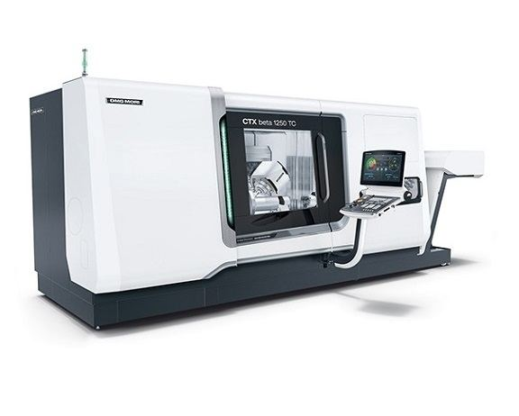

DMG MORI – CTX beta 1250 TC
CNC eszterga- marógép központ köszörülés funkcióval
Gyártási év2021
max. megmunk. hossz1200 mm
Mozgástartomány: x / y / z490 / ± 125 / 1300 mm
max. megmunk. átmérő500 mm
fő/ Ellen / Maróorsó Fordulat5 000 / 6000 /12000 RPM
pozícionálási pontosság< 0,006 mm
Visszaállási pontosság< 0,002 mm
+mérőléc AZ ÖSSZES tengelyen
+HOMlok / PALÁSt / Furat / FOK köszörülés
+80 BAR szerszámon keresztüli hűtés
+SZIMULTÁN 5 tengelyes megmunkálás